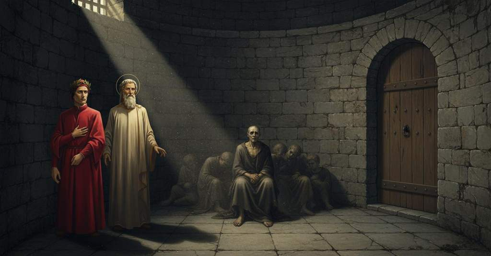

Inferno — Canto 33

Riassunto Summary 要約
Il conte Ugolino narra la straziante storia della sua morte per fame insieme ai figli prima di riprendere a rodere il teschio del traditore Ruggieri; i poeti procedono poi nella Tolomea, dove frate Alberigo spiega che le anime dei traditori degli ospiti arrivano all'Inferno prima che i loro corpi muoiano.
Count Ugolino recounts the harrowing story of his death by starvation along with his sons before resuming gnawing on the skull of the traitor Ruggieri; the poets then proceed into Tolomea, where Friar Alberigo explains that the souls of traitors to guests arrive in Hell before their bodies die.
ウゴリーノ伯は、息子たちとの餓死という悲惨な物語を語ってから裏切り者ルッジエーリの頭蓋を再び齧り、その後詩人たちはトロメアへと進むと、そこで修道士アルベリーゴが客人を裏切った者の魂は肉体の死より先に地獄へ来ると説明する。
Segmento 1 1–36
Quel peccatore, il conte Ugolino, solleva la bocca dalla testa dell'arcivescovo Ruggieri e accetta di raccontare la sua storia, pur rinnovando un dolore disperato, a condizione che le sue parole portino infamia al traditore che sta rodendo. Rivela la propria identità e quella della sua vittima, spiegando che, sebbene la sua cattura per tradimento sia nota, la crudeltà della sua morte non lo è. Inizia quindi a descrivere un sogno profetico avuto in prigione: Ruggieri, come un maestro cacciatore, guidava i Gualandi, i Sismondi e i Lanfranchi a caccia di un lupo e dei suoi lupicini (Ugolino e i suoi figli), che dopo una breve corsa venivano raggiunti e i loro fianchi squarciati dalle zanne dei cani.
That sinner, Count Ugolino, lifts his mouth from the head of Archbishop Ruggieri and agrees to tell his story, despite renewing a desperate sorrow, on the condition that his words bring infamy to the traitor he is gnawing. He reveals his own identity and that of his victim, explaining that while his capture through betrayal may be known, the cruelty of his death is not. He then begins to describe a prophetic dream he had in prison: Ruggieri, like a master huntsman, was leading the Gualandi, Sismondi, and Lanfranchi on a hunt for a wolf and its whelps (Ugolino and his sons), who after a short run were caught and had their flanks torn by the hounds' fangs.
罪人であるウゴリーノ伯は、ルッジエーリ大司教の頭から口を離し、絶望的な悲しみを新たにするものの、自らが噛んでいる裏切り者に不名誉をもたらすという条件で、身の上を語ることに同意する。彼は自らと犠牲者の正体を明かし、裏切りによって捕らえられたことは知られているかもしれないが、その死の残酷さまでは知られていないと説明する。そして牢獄で見た予言的な夢について語り始める。その夢では、ルッジエーリが狩りの名人としてグアランディ家、シズモンディ家、ランフランキ家を率いて狼とその子狼（ウゴリーノとその息子たち）を追い、短い追跡の後に狼たちは捕らえられ、犬の牙で脇腹を引き裂かれるのだった。
Segmento 2 37–75
Ugolino si sveglia e sente i suoi figli piangere per la fame. Sente poi inchiodare la porta della torre e guarda i suoi figli in silenzio, pietrificato nel dolore, mentre loro piangono. In un impeto di angoscia, si morde le mani; i figli, pensando che lo faccia per fame, gli offrono le proprie carni. Per non rattristarli ulteriormente, Ugolino si quieta e per due giorni tutti restano in silenzio. Descrive come, dal quarto al sesto giorno, i suoi figli muoiano uno a uno davanti a lui. Dopo la loro morte, ormai cieco, brancola sui loro corpi chiamandoli per due giorni, prima che, come conclude, la fame abbia più potere del dolore.
Ugolino awakens and hears his children crying from hunger. He then hears the tower door being nailed shut and looks at his sons in silence, petrified with grief, while they weep. In a fit of anguish, he bites his hands; his sons, thinking he does it out of hunger, offer him their own flesh. So as not to sadden them further, Ugolino becomes quiet, and for two days they all remain silent. He describes how, from the fourth to the sixth day, his sons die one by one before him. After their death, now blind, he gropes over their bodies calling to them for two days, before, as he concludes, hunger had more power than grief.
ウゴリーノは目を覚まし、息子たちが空腹で泣いているのを聞く。次いで塔の扉が釘で打ち付けられる音を聞き、悲しみに打ちひしがれ、息子たちが泣き叫ぶ中、黙って彼らを見つめる。苦悶の発作から両手を噛むと、息子たちは父が空腹のあまりそうしているのだと思い、自分たちの肉を差し出す。彼らをこれ以上悲しませないようにウゴリーノは静かになり、二日間全員が沈黙を守る。四日目から六日目にかけて、息子たちが次々と目の前で死んでいく様を語る。彼らの死後、盲目となった彼は二日間にわたってその亡骸の上を這い回り呼びかけ、そして最後に、悲しみよりも飢えの方が強かったと結論づける。
Segmento 3 76–108
Finito di parlare, Ugolino riprende ferocemente a rodere il teschio di Ruggieri. Il narratore lancia allora una violenta invettiva contro Pisa: si augura che le isole di Capraia e Gorgona blocchino la foce dell'Arno per annegarne gli abitanti, perché, anche se Ugolino era un traditore, i suoi figli innocenti non avrebbero dovuto subire una tale croce. I poeti passano poi alla zona successiva, dove i traditori degli ospiti giacciono supini nel ghiaccio. Qui le loro lacrime si congelano nelle orbite, impedendo un ulteriore pianto e volgendo il dolore all'interno per accrescere l'angoscia. Sebbene il suo viso sia intorpidito dal freddo, il narratore avverte un vento e ne chiede la causa a Virgilio, che gli dice che presto vedrà da solo la fonte.
Having finished speaking, Ugolino fiercely resumes gnawing on Ruggieri's skull. The narrator then launches a violent invective against Pisa: he wishes that the islands of Capraia and Gorgona would block the mouth of the Arno to drown its inhabitants, because even if Ugolino was a traitor, his innocent sons should not have had to suffer such a cross. The poets then pass on to the next zone, where the traitors to guests lie supine in the ice. Here their tears freeze in their eye sockets, preventing further weeping and turning their grief inward to increase their anguish. Although his face is numb from the cold, the narrator feels a wind and asks Virgil its cause, who tells him that he will soon see the source for himself.
語り終えると、ウゴリーノは再びルッジエーリの頭蓋を激しく齧り始める。そこで語り手はピサに対して激しい非難を浴びせる。ウゴリーノが裏切り者であったとしても、罪のないその息子たちがそのような十字架を負うべきではなかったとして、カプライア島とゴルゴーナ島がアルノ川の河口を塞ぎ、住民を溺れさせることを願う。詩人たちは次に、客人を裏切った者たちが氷の中に仰向けに横たわる次の区域へと進む。そこでは罪人たちの涙が眼窩で凍りつき、それ以上泣くことを妨げ、悲しみを内側へと向かわせて苦悩を増大させる。寒さで顔の感覚が麻痺しているにもかかわらず、語り手は風を感じてウェルギリウスにその原因を尋ねると、間もなく自らの目でその源を見ることになるだろうと告げられる。
Segmento 4 109–157
Un dannato, frate Alberigo, prega il narratore di togliergli dal viso le lacrime ghiacciate. Il narratore promette di aiutarlo in cambio del suo nome. Alberigo si rivela e spiega il privilegio della Tolomea: l'anima di chi tradisce gli ospiti cade nell'inferno prima che il corpo muoia, mentre questo viene abitato da un demonio. Indica poi un altro dannato in questa condizione, il genovese Branca Doria. Sentendo ciò, il narratore non mantiene la promessa, poiché ritiene che essere villano con loro sia cortesia, e lancia una violenta invettiva contro i Genovesi.
A damned soul, Friar Alberigo, begs the narrator to remove the frozen tears from his face. The narrator promises to help him in exchange for his name. Alberigo reveals his identity and explains the privilege of Tolomea: the soul of one who betrays guests falls into hell before the body dies, while the body becomes inhabited by a demon. He then points out another damned soul in this condition, the Genoese Branca Doria. Hearing this, the narrator does not keep his promise, as he believes that being villainous to them is a courtesy, and launches a violent invective against the Genoese.
罪人の一人、修道士アルベリーゴが、凍りついた涙を顔から取り除いてくれるよう語り手に懇願する。語り手は、名前を明かすことと引き換えに彼を助けると約束する。アルベリーゴは正体を明かし、トロメアの特権を説明する。客人を裏切った者の魂は、その肉体が死ぬ前に地獄に落ち、肉体には悪魔が宿るというのだ。彼は次に、同じ境遇にある別の罪人、ジェノヴァ人ブランカ・ドーリアを指し示す。これを聞いた語り手は、彼らに非情であることが礼節であると考え、約束を守らず、ジェノヴァ人に対して激しい非難を浴びせる。